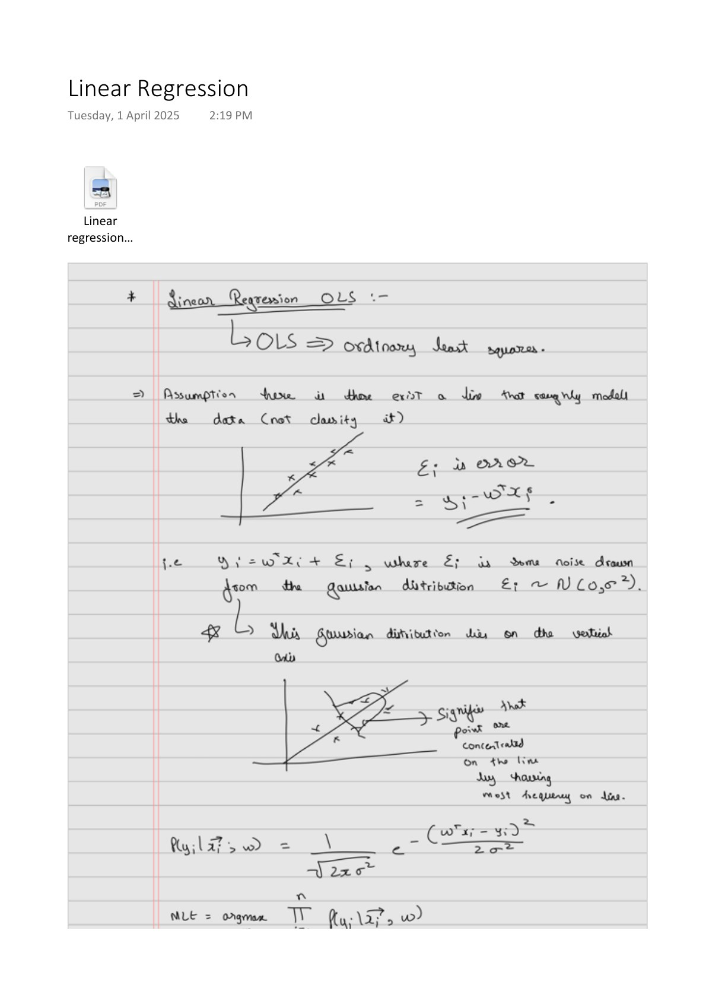

Linear Regression: From Gaussian Noise to Ridge
Expanded from Linear Regression.pdf · View a handwritten page
The MLE notes explain how to choose a probability model that makes observed data plausible. Linear regression applies that idea to numerical outputs. We will fit three rows by hand, then see why squared error, Gaussian noise, and ridge regularization belong in the same story.
A small table before the equation
| Student | Hours $x$ | Centered hours $u=x-2$ | Points $y$ |
|---|---|---|---|
| Asha | 1 | −1 | 1 |
| Ben | 2 | 0 | 1 |
| Cara | 3 | 1 | 4 |
Centering subtracts the average number of hours, which is 2. It makes the arithmetic easier without changing which straight lines we can fit. Our prediction rule is $\hat y=b+wu$: $b$ predicts points at two hours, and $w$ is the predicted change per additional hour.
Find the line with the smallest squared errors
A residual is observed output minus predicted output: $r_i=y_i-\hat y_i$. Ordinary least squares chooses $b$ and $w$ to minimize the sum of their squares.
Why centering makes the intercept the mean output
Centering means $u_i=x_i-\bar x$, where $\bar x$ is the mean input. Subtracting that mean makes the centered inputs sum to zero. In our table, $-1+0+1=0$. Their mean $\bar u$ is therefore zero too.
Average the predictions $\hat y_i=b+wu_i$. The intercept contributes $b$ to every row, while the slope contributions cancel when averaged:
So $b$ is the average prediction. We still need to show why least squares makes it equal the average observed output.
Hold the slope $w$ fixed for a moment. Changing $b$ shifts every prediction up or down by the same amount. To find the best shift, differentiate the sum of squared errors with respect to $b$:
Each residual has derivative $-1$ with respect to $b$, which gives the factor $-2$ by the chain rule. At the minimum, this derivative is zero, so the residuals sum to zero. Expanding that sum gives:
The last term vanishes because the inputs are centered. Divide by $n$ to obtain:
$b=(1+1+4)/3=\mathbf{2}$.
This holds for any fixed slope, so we can determine the intercept before calculating the slope. The fitted line predicts the mean output when the input is at its mean.
Now calculate the slope
With $b=\bar y$ fixed, choose $w$ to minimize the squared residuals $(y_i-\bar y-wu_i)^2$. Set the derivative with respect to $w$ to zero and collect the terms containing $w$:
Dividing by the sum of squared inputs gives the slope:
The numerator measures how inputs and outputs vary together around their means. The denominator accounts for the input's spread. Here $\bar y=2$, so the centered outputs are $-1,-1,2$.
The numerator terms are $(-1)(1-2)=1$, $0(1-2)=0$, and $1(4-2)=2$. The squared inputs in the denominator are 1, 0, and 1. Therefore:
| Student | Observed | Predicted | Residual | Squared residual |
|---|---|---|---|---|
| Asha | 1 | 0.5 | 0.5 | 0.25 |
| Ben | 1 | 2 | −1 | 1 |
| Cara | 4 | 3.5 | 0.5 | 0.25 |
The sum of squared errors, abbreviated SSE, is 1.5. On the original hours scale the same line is $2+1.5(x-2)=-1+1.5x$. Its intercept changes because zero now refers to zero hours instead of average hours.
Why would likelihood prefer this line?
Suppose a line describes the average output, with independent Gaussian noise of the same variance for every row:
From noise to observed outputs
Output = predicted value + noise. For a fixed input and a fixed line, the prediction is a fixed number. Adding it to zero-mean Gaussian noise shifts the bell curve's center to the prediction without changing its spread. So our assumption about $\epsilon_i$ also determines the distribution of $y_i$:
A Gaussian with mean $\mu$ and variance $\sigma^2$ has this density:
For row $i$, substitute the observed output $y_i$ and predicted mean $b+wu_i$. Their difference is the residual $r_i=y_i-(b+wu_i)$. Our model attributes this difference to noise. Evaluating the Gaussian noise density at this residual gives the output's density:
From the row densities to a loss
Hold $\sigma^2>0$ fixed while comparing lines. Independence lets us multiply the observed outputs' densities to get the likelihood for all $n$ rows:
The symbol $\prod$ means “multiply over the rows.” Multiplying $n$ copies of the factor in front gives $(2\pi\sigma^2)^{-n/2}$; multiplying the exponentials adds their exponents:
Now take the natural log: products become sums, powers become multipliers, and $\log(e^a)=a$. Since $\mathrm{SSE}=\sum_i r_i^2$, this gives:
Because log is increasing, maximizing $\log L$ chooses the same line as maximizing $L$. Negate it to turn maximization into loss minimization:
What does the first term do?
The first term comes from taking the negative log of the Gaussian normalization factor, $(2\pi\sigma^2)^{-n/2}$. It is not a regularizer: with $\sigma^2$ fixed, it is constant for every choice of $b,w$. A penalty such as $\lambda w^2$ instead favors smaller slopes, as we will see in ridge regression.
The remaining term is SSE times a fixed positive number. Maximizing Gaussian likelihood therefore gives the least-squares fit. Least squares itself does not require Gaussian noise; that assumption gives it this probabilistic interpretation.
If we also estimate $\sigma^2$, we must keep both terms. Increasing variance reduces the SSE term but broadens the Gaussian curve and increases the log term. This prevents choosing arbitrarily large noise variance just to make the error term small.
Here the MLE variance estimate is SSE/$n=1.5/3=0.5$. The usual unbiased estimate divides by $n-2$ to account for the fitted intercept and slope, giving 1.5 instead.
Write the same calculation as a matrix
Place one row per student in a design matrix $X$. Its first column is all ones for the intercept; its second column contains centered hours. Put the two coefficients in a vector $\theta$.
The objective $J(\theta)=\frac12\lVert X\theta-y\rVert^2$ has gradient $X^\top(X\theta-y)$. Setting it to zero gives the normal equations:
This gives $b=2$ and $w=1.5$ again. The inverse formula $(X^\top X)^{-1}X^\top y$ requires independent columns. In code, use a least-squares solver for better numerical stability:
import numpy as np
hours = np.array([1., 2., 3.])
y = np.array([1., 1., 4.])
u = hours - hours.mean()
X = np.column_stack([np.ones(3), u])
theta = np.linalg.lstsq(X, y, rcond=None)[0]
print(theta) # [2. 1.5]
print(np.sum((y - X @ theta)**2)) # 1.5With $n$ rows and $p$ columns, forming these equations costs roughly $O(np^2)$ and solving the dense system costs $O(p^3)$. Other solvers have different costs.
Reach the fit through small updates
Gradient descent offers another route. Start at $b=w=0$. All predictions are zero, so the residuals in “prediction minus observation” order are −1, −1, and −4.
Intercept gradient = −1 − 1 − 4 = −6.
Slope gradient = (−1)(−1) + 0(−1) + 1(−4) = −3.
With learning rate 0.1, subtract 0.1 times each gradient: $b=0.6$, $w=0.3$. Predictions become 0.3, 0.6, and 0.9, reducing the objective from 9 to 5.13. Repeat using the updated predictions. Averaging the loss over rows scales gradients by $1/n$, so adjust the learning rate accordingly.
Turn a prior into ridge regularization
Now suppose we prefer moderate slopes unless the observations support a large one. Give $w$ a zero-mean Gaussian prior with variance $\tau^2$. Keep the intercept unpenalized. The negative log posterior, after discarding constants, is:
Multiplying by $2\sigma^2$ gives $\mathrm{SSE}+\lambda w^2$, with $\lambda=\sigma^2/\tau^2$. A smaller prior variance means a stronger penalty. This is the MAP interpretation of ridge under this specific summed-loss convention.
Use $\lambda=2$ with our centered data. The intercept stays at 2 and the slope becomes:
| Line | SSE | Penalty | Total |
|---|---|---|---|
| OLS: slope 1.5 | 1.5 | 4.5 | 6 |
| Ridge: slope 0.75 | 2.625 | 1.125 | 3.75 |
Ridge trades larger training errors for a smaller slope; check on held-out data whether predictions improve. Feature units matter because the penalty acts on coefficient sizes.
The matrix equations become $(X^\top X+\lambda P)\theta=X^\top y$, where $P=\operatorname{diag}(0,1,\ldots,1)$ leaves the intercept unpenalized.
What happens as the ridge penalty gets very large?
In this example the slope approaches zero, while the intercept stays at the mean output, 2. Predictions approach 2 for every student.
From a numerical output to a class
We started with observations, chose a noise model, and obtained a fitting objective. The next two guides use the same pattern for labels. Naïve Bayes models how inputs occur within each class; logistic regression directly models the probability of a label.
From the handwritten notes
This guide expands Linear Regression.pdf with worked tables and intermediate steps. The PDF contains all the original pages.
View original page 1


Further reading: